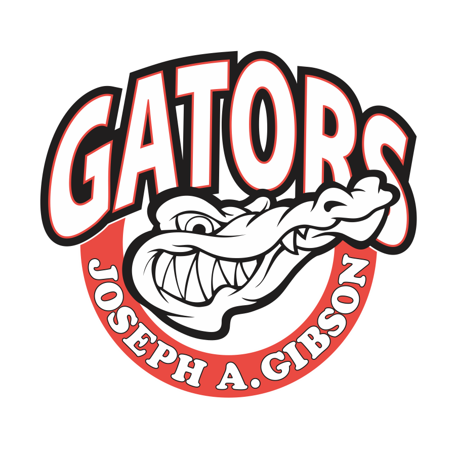

|
Naseem MohsinMy name is Naseem Mohsin. I am a first year student at York University studying Information Technology. York University is located in Ontario, Canada. With the rise of technology and AI in the world, I want to be a part of this evolution. About MeI am someone who has a lot of hobbies and things I enjoy. One of my hobbies is physical sports. I love playing basketball, soccer, and volleyball. I also played for my elementary school's grade 8 basketball team. Something else I like to do is to read manga. I like to causally read in my free time. Some of my favourites are Attack on Titan, and Gintama. |
{kind=link}
Work Experience |
|
|
Rides Operator | Canada's Wonderland | August 2021 - Present
Responsible for safe operations of rides according to iROC procedures and safety guidelines. This involves starting and stopping rides, ensuring proper loading and unloading of passengers, and monitoring ride performance throughout operation. |
|
|
Courts Monitor | AirRiderz | December 2022 - August 2023
Collaborating with a coach to create a safe, supportive, and fun environment for children learning to play tennis. |
|
|
Sales Associate | Bluenotes' | September 2023 - Present
Working with program instructor to engage children to participate in a variety of sport activities and drills that promote coordination, development of gross motor skills and cooperation. |
Education |
|

|
Joseph A. Gibson Public School
Studied from grade 1 to 4 at this school. |
|
|
Glenn Gould Public School
I studied from grade 5 to 8 here. I was a part of the graduating class of 2019. |
|
|
Tommy Douglas Secondary School
I got my Ontario Secondary School Diploma in 2023. I studied in Tommy Douglas from 2019-2023. |

|
Information Technology (Honours)
I am a first year student at York University. I should be a part of the graduating class of 2023. This program teaches the fundamental concepts in IT, including computer systems, programming languages, databases, networks, and software development. These are all key things to know in order to be successful in the IT industry. |